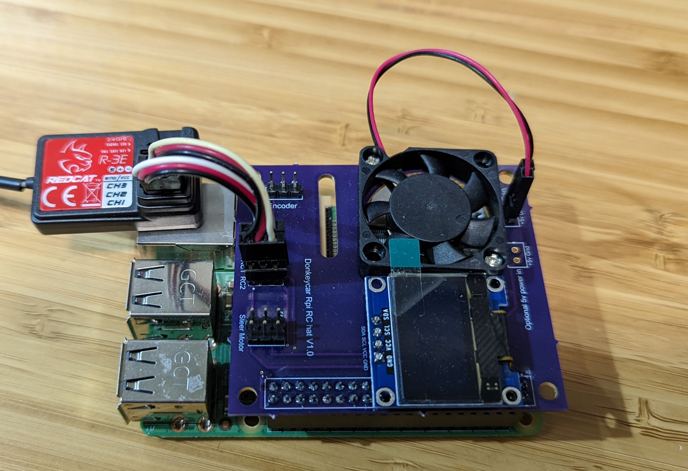

Donkeycar RC Hat

If you started with a ready-to-run RC car, it probably came with a RC controller. Good news: you can use it with Donkeycar, using the RC controller for manual driving. You can also plug in the car's servo and motor controller directly into the RaspberryPi without the need for a PCA9685 motor/servo controller board.
Note that you will want your RC controller to be well trimmed prior to using it with the RC hat. You want the throttle trim, steering trim and steering range to be well adjusted; see this video for how to do that.
To do so, you can either wire up it up manually as shown in this tutorial (which works, but has a lot of fiddly wires that can fall off) or do it far more neatly with the Donkeycar RC hat, shown above, which handles all the wiring for you, along with including an OLED screen and a fan.
The Donkeycar RC hat can be purchased from the Donkeycar Store. Note that it only works with the RaspberryPi, not the Jetson Nano, due to limitations with the way the Jetson handles its I/O pins.
If you're using a standard wheel encoder, you can plug it into the "Encoder" pins. You can also power the RaspberryPi from this board if you have a 5V source with the "Optional 5v power in" pins
Once you've plugged in all the cables, you can move to the software setup
There are two parts to the software setup. The first part is setting up to read the RC Controller using the RC Hat. The Second, optional, part is setting up the drive train so we can control the ESC and SERVO using the RC hat (so you don't need a PCA9685 anymore)/
Install PiGPIO
In both cases we are going to use the PiGPIO library to control the I/O pins (remember, this only works on a RaspberryPi). Install PiGPIO from a command prompt as follows;
sudo apt-get update
sudo apt-get install pigpio
Then, on the command line enter this to set the PIGPIO daemon to always run on startup:
sudo systemctl enable pigpiod & sudo systemctl start pigpiod
Reading RC Controller with RC Hat
The RC Hat can route the PWM signals generated by your RC Receiver to the RaspberryPi's gpio pins, so software can measure the length of the PWM pulse and then use that to determine steering and throttle. This allows you to use the RC controller that came with your RC rather than using a game controller.
Connection: To use the RC hat to read your RC controller, use the included 3-wire cables to connect your RC receiver to the RC 1 and RC 2 pins (corresponding to the RC receiver's Channel 1 and Channel 2). In all cases, make sure you plug them in the right way, noting the +,- and S (Signal) markings. Typically the black wire is "-", the red wire in the middle is "+" and the white wire is "S".
Configuration:
Now edit your myconfig.py file to use the RC Hat to read the RC Controller. In your mycar directory, edit the myconfig.py files as follows:
Use pigpio_rc as your controller type in your myconfig.py file. Uncomment the CONTROLLER_TYPE line (remove the leading #) and edit it as follows:
CONTROLLER_TYPE = 'pigpio_rc'
Also set use joystick to True
USE_JOYSTICK_AS_DEFAULT = True
There are additional settings you can change in the #PIGPIO RC control section, such as reversing the direction of output or the pins connected, or adjusting the expect PWM pulse width (see Standard RC with ESC and Steering Servo for a discussion of Pulse Width Modulation); TLDR - a 1000 nanosecond pulse means full left/reverse, a 1500 nano second pulse means straight/stopped and a 2000 nanosecond pulse means full right/forward. The defaults are generally good and you can start with them. If you see any issues when calibrating then read the Troubleshooting section to see how you might change one or more of these values to compensate.
Input options for reading RC controller:
#PIGPIO RC control
STEERING_RC_GPIO = 26 # gpio pin (in broadcom numbering) for reading the RC controller's steering
THROTTLE_RC_GPIO = 20 # gpio pin (in broadcom numbering) for reading the RC Controller's throttle
DATA_WIPER_RC_GPIO = 19 # gpio pin (in broadcom numbering) for reading the RC Controller's button
PIGPIO_STEERING_MID = 1500 # PWM pulse in nanoseconds for 'straight` steering. Adjust this value if your car cannot run in a straight line.
PIGPIO_MAX_FORWARD = 2000 # PWM pulse in nanoseconds for max forward throttle.
PIGPIO_STOPPED_PWM = 1500 # PWM pulse in nanoseconds for zero throttle
PIGPIO_MAX_REVERSE = 1000 # PWM pulse in nanoseconds for max reverse throttle.
PIGPIO_SHOW_STEERING_VALUE = False
PIGPIO_INVERT = False # rarely a controller uses an inverted pulse; if so then set to True
PIGPIO_JITTER = 0.025 # threshold below which no signal is reported (debounce/noise rejection)
Controlling ESC and Steering Servo with RC Hat
Optionally, you can use the RaspberryPi to generate PWM (see Standard RC with ESC and Steering Servo) for controlling the motor speed and steering rather than using a PCA9685 board (there, see you just paid for the RC Hat!).
Connection: The RC hat includes two 3-pin headers compatible with the servo cables that connect to the ESC and the steering servo. Plug your car's servo into the Servo pins and the Motor Controller into the Motor pins. In all cases, make sure you plug them in the right way, noting the +,- and S (Signal) markings. Typically the black wire is "-", the red wire in the middle is "+" and the white wire is "S".
Configuration:
For RC output, select PWM_STEERING_THROTTLE as your drive train type in your myconfig.py file. Uncomment the DRIVE_TRAIN_TYPE line (remove the leading #) and edit it as follows:
DRIVE_TRAIN_TYPE = "PWM_STEERING_THROTTLE"
Then uncomment the entire PWM_STEERING_THROTTLE configuration block and make sure steering uses "PIGPIO.BCM.13" and throttle uses "PIGPIO.BCM.18" because that is how the pins on the RC Hat are connected to the RaspberryPi 40 pin header.
PWM_STEERING_THROTTLE = {
"PWM_STEERING_PIN": "PIGPIO.BCM.13", # PWM output pin for steering servo
"PWM_STEERING_SCALE": 1.0, # used to compensate for PWM frequency differents from 60hz; NOT for adjusting steering range
"PWM_STEERING_INVERTED": False, # True if hardware requires an inverted PWM pulse
"PWM_THROTTLE_PIN": "PIGPIO.BCM.18", # PWM output pin for ESC
"PWM_THROTTLE_SCALE": 1.0, # used to compensate for PWM frequence differences from 60hz; NOT for increasing/limiting speed
"PWM_THROTTLE_INVERTED": False, # True if hardware requires an inverted PWM pulse
"STEERING_LEFT_PWM": 460, #pwm value for full left steering
"STEERING_RIGHT_PWM": 290, #pwm value for full right steering
"THROTTLE_FORWARD_PWM": 500, #pwm value for max forward throttle
"THROTTLE_STOPPED_PWM": 370, #pwm value for no movement
"THROTTLE_REVERSE_PWM": 220, #pwm value for max reverse throttle
}
Calibration
After configuring the RC hat to read the RC controller and optionally control the ESC and steering servo you should do the normal calibration step to figure out the correct steering and throttle PWM values for your car (and to make sure you've hooked things up correctly).
Troubleshooting
If one channel is reversed (steering left goes right, etc), either reverse that channel on your RC transmitter (that's usually a switch or setting) or change it in the output options shown above by changing the PWM_INVERTED value for that channel to True.
OLED setup
Enable the display in myconfig.py.
# SSD1306_128_32
USE_SSD1306_128_32 = True # Enable the SSD_1306 OLED Display
SSD1306_128_32_I2C_BUSNUM = 1 # I2C bus number
SSD1306_RESOLUTION = 1 # 1 = 128x32; 2 = 128x64
Showing your IP address on startup.
One of the cool things about having an OLED screen is that you can show your car's IP address on startup, so you can connect to it. Instructions to set that up are here
Troubleshooting
If you are unable to start the car, ensure that the Adafruit_SSD1306 package is installed in your virtual environment. This should automatically be installed, if you are using a recent version of donkeycar.
pip install Adafruit_SSD1306
Encoder
If you're using a standard wheel encoder, you can plug it into the "Encoder" pins, then setup the encoder configuration in your myconfig.py to use the pin that is exposed by the RC hat's encoder header.